目录
以大型语言模型（Large Language Model，简称LLM）作为核心控制器的智能体构建是一个很酷的概念。AutoGPT、GPT-Engineer和BabyAGI等多个概念验证演示项目为我们提供了启发。LLM的潜力远不止生成优美的文案、故事、文章和程序，它可以被塑造成一个强大的通用问题求解器。
智能体系统概述
在基于LLM的自主智能体系统中，LLM作为智能体的“大脑”，并由几个关键组件加以辅助：

组成部分一：规划
一个复杂任务通常包含多个步骤。智能体需要清楚这些步骤是什么，并提前做好规划。
任务分解
提示工程（CoT；Wei et al. 2022）已成为提升模型在复杂任务上表现的标准提示技术。模型被指示“一步一步思考”，以利用更多的测试时计算资源，将困难任务分解为更小、更简单的步骤。CoT将大型任务转化为多个可管理的子任务，并为我们揭示了模型的思考过程。
Tree of Thoughts（Yao et al. 2023）在CoT基础上进一步扩展，在每一步都探索多种推理可能性。它首先将问题分解为多个思考步骤，并在每个步骤生成多个想法，形成树状结构。搜索过程可以采用BFS（广度优先搜索）或DFS（深度优先搜索），每种状态由分类器（通过提示）或多数投票进行评估。
任务分解可以通过以下方式实现：（1）用简单提示让LLM完成，例如“完成XYZ的步骤。\n1.”、“实现XYZ的子目标有哪些？”；（2）使用特定任务的指令，例如为写小说给出“写一个故事大纲。”；（3）结合人工输入。
另一种截然不同的方法是LLM+P（Liu et al. 2023），它依赖外部经典规划器来进行长周期规划。该方法使用规划域定义语言（PDDL）作为中间接口来描述规划问题。在这个过程中，LLM（1）将问题翻译成“Problem PDDL”，然后（2）请求经典规划器基于现有的“Domain PDDL”生成PDDL计划，最后（3）将PDDL计划翻译回自然语言。本质上，规划步骤被外包给外部工具，前提是存在特定领域的PDDL和合适的规划器——这在某些机器人场景中很常见，但在许多其他领域并不适用。
自我反思
自我反思是一个重要机制，它让自主智能体能够通过优化过去的行动决策并纠正先前错误来实现迭代改进。它在现实世界任务中至关重要，因为试错是不可避免的。
ReAct（Yao et al. 2023）通过将行动空间扩展为特定任务的离散动作与语言空间的组合，在LLM中将推理和行动整合在一起。前者让LLM能够与环境交互（例如使用Wikipedia搜索API），后者则提示LLM用自然语言生成推理轨迹。
ReAct的提示模板包含明确的思考步骤，大致格式为：
Thought: ...
Action: ...
Observation: ...
... (Repeated many times)
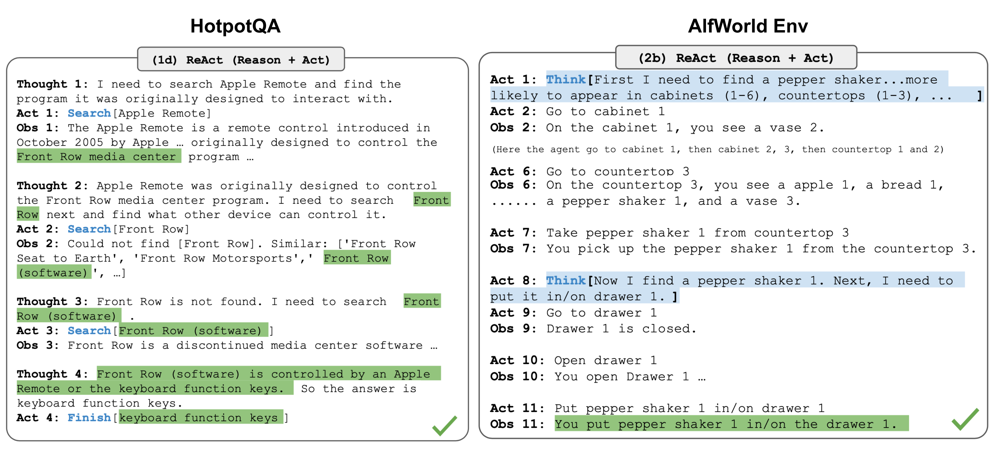
在知识密集型任务和决策任务的实验中，ReAct的表现均优于仅保留Action而移除“Thought: ……”步骤的Act-only基线。
Reflexion（Shinn & Labash 2023）是一个为智能体提供动态记忆和自我反思能力的框架，旨在提升推理能力。Reflexion采用标准的强化学习（RL）设置，其中奖励模型提供简单的二元奖励，行动空间沿用ReAct的设计，并通过语言增强任务特定的行动空间以支持复杂推理步骤。在每个行动a_t之后，智能体计算一个启发式函数h_t，并可根据自我反思结果选择是否重置环境以开始新的尝试。
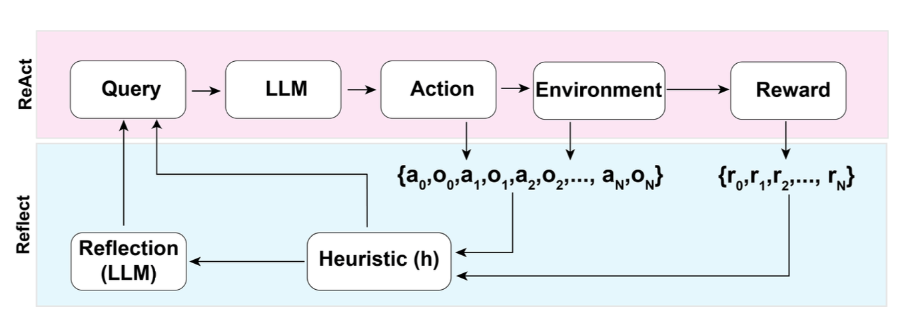
启发式函数用于判断轨迹是否低效或包含幻觉，从而决定是否停止。低效规划指花费过长时间却没有取得成功的轨迹。幻觉则定义为遇到一系列连续相同的行动，却在环境中得到相同观察结果的情况。
自我反思通过向LLM展示少样本示例实现，每个示例是一对（失败轨迹，理想反思），后者用于指导未来计划的调整。随后，这些反思（最多三条）会被加入智能体的工作记忆，作为查询LLM时的上下文。
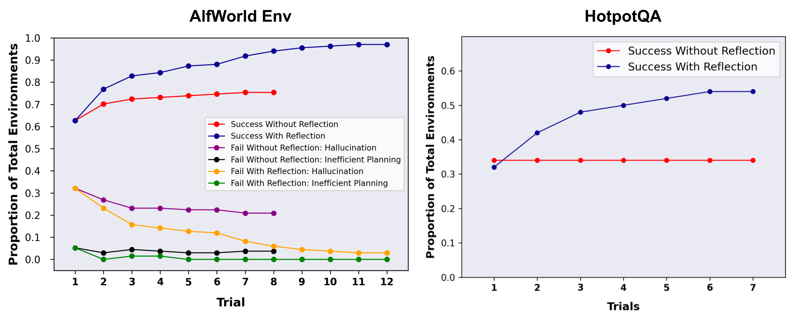
Chain of Hindsight（CoH；Liu et al. 2023）通过明确向模型展示一系列过去输出（每个输出都附带反馈），来鼓励模型改进自己的输出。人类反馈数据由D_h = \{(x, y_i , r_i , z_i)\}_{i=1}^n组成，其中x是提示，y_i是模型生成的结果，r_i是人类对y_i的评分，z_i是对应的人类事后反馈。假设这些反馈元组按奖励排序为r_n \geq r_{n-1} \geq \dots \geq r_1。训练过程采用监督微调，数据形式为\tau_h = (x, z_i, y_i, z_j, y_j, \dots, z_n, y_n)，其中\leq i \leq j \leq n。模型被微调为仅预测y_n，在给定序列前缀的条件下，使模型能够根据反馈序列进行自我反思并生成更好的输出。在测试时，模型还可以接收多轮人工标注者的指令。
为避免过拟合，CoH加入了一个正则化项以最大化预训练数据集的对数似然。为了防止走捷径和复制（因为反馈序列中存在许多常见词），他们在训练中随机掩盖0%-5%的过去token。
他们实验中使用的数据集结合了WebGPT comparisons、summarization from human feedback和human preference dataset。
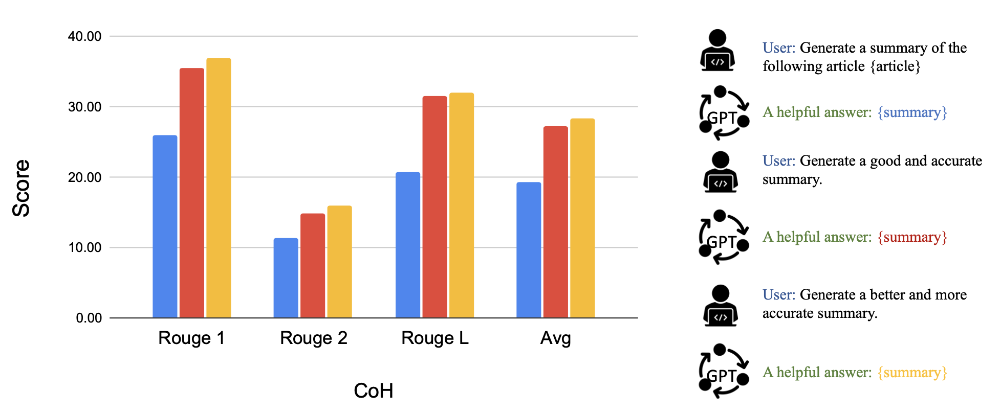
CoH的核心思想是在上下文中呈现一系列逐步改进的输出历史，并训练模型遵循这种趋势来生成更好的结果。Algorithm Distillation（AD；Laskin et al. 2023）将这一思想应用到强化学习任务中的跨episode轨迹上，将算法封装在一个依赖长期历史的策略中。考虑到智能体与环境进行多次交互，且每个episode都会有所进步，AD将这些学习历史拼接起来输入模型。因此，我们可以预期下一个预测动作会比之前的尝试表现更好。其目标是学习强化学习的过程，而非训练特定任务的策略本身。
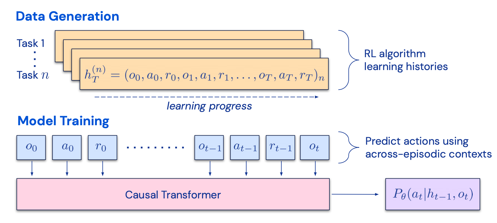
该论文假设，任何能够生成学习历史集合的算法，都可以通过对动作进行行为克隆而被提炼到神经网络中。历史数据由一组针对特定任务训练的源策略生成。在训练阶段，每次强化学习运行时会随机采样一个任务，并使用多episode历史的一个子序列进行训练，从而使学到的策略与具体任务无关。
现实中，模型的上下文窗口长度有限，因此episode需要足够短才能构建多episode历史。2-4个episode的多episode上下文对于学习接近最优的上下文强化学习算法是必要的。上下文强化学习的涌现需要足够长的上下文。
与三个基线（ED（专家提炼，使用专家轨迹而非学习历史的行为克隆）、源策略（用于生成轨迹以供多臂老虎机问题及其解决方案进行提炼）、RL^2（Duan et al. 2017，作为上限，因为它需要在线RL））相比，AD在仅使用离线RL的情况下实现了上下文强化学习，性能接近RL^2，并且比其他基线学习速度快得多。当给定源策略的部分训练历史时，AD也比ED基线改进得更快。
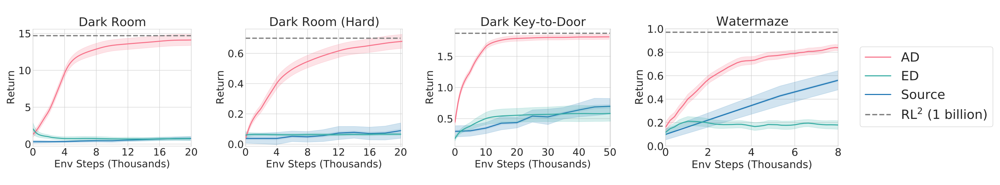
组成部分二：记忆
（非常感谢ChatGPT帮助我起草本节内容。在与ChatGPT的对话中，我学到了很多关于人脑和快速MIPS数据结构的知识。）
记忆的类型
记忆可以定义为获取、存储、保留以及后续检索信息的过程。人脑中存在多种类型的记忆。
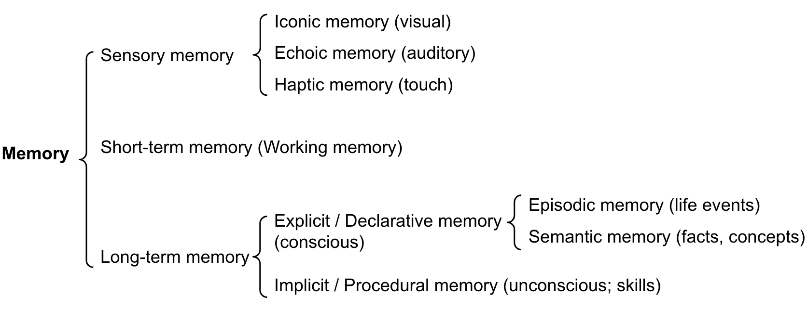
我们可以粗略地建立以下对应关系：
最大内积搜索（MIPS）
外部记忆可以缓解有限注意力跨度的限制。标准的做法是将信息的嵌入表示保存到支持快速最大内积搜索（MIPS）的向量存储数据库中。为了优化检索速度，通常选择近似最近邻（ANN）算法，以返回大约前k个最近邻，以少量精度损失换取大幅速度提升。
以下是几种常用的快速MIPS的ANN算法：
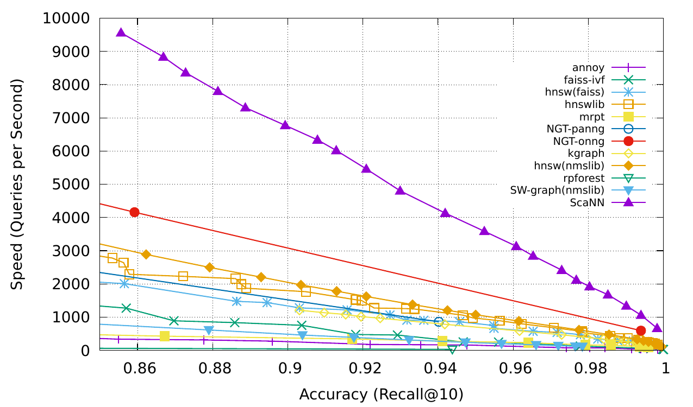
更多MIPS算法及其性能对比可参考ann-benchmarks.com。
组成部分三：工具使用
工具使用是人类的一个显著且独特的特征。我们创造、修改并利用外部物体来完成超出自身物理和认知极限的事情。为LLM配备外部工具可以显著扩展模型的能力。
MRKL（Karpas et al. 2022），全称“Modular Reasoning, Knowledge and Language”，是一种用于自主智能体的神经符号架构。MRKL系统包含一系列“专家”模块，而通用LLM则作为路由器，将查询路由到最合适的专家模块。这些模块可以是神经的（例如深度学习模型）或符号的（例如数学计算器、货币转换器、天气API）。
他们进行了一项实验，让LLM通过微调来调用计算器，并以算术作为测试用例。实验表明，解决口头描述的数学问题比明确陈述的数学问题更难，因为LLM（7B Jurassic1-large模型）无法可靠地提取基本算术运算所需的正确参数。结果表明，当外部符号工具能够可靠工作时，知道何时以及如何使用这些工具至关重要，这取决于LLM的能力。
TALM（Tool Augmented Language Models；Parisi et al. 2022）和Toolformer（Schick et al. 2023）都通过微调语言模型，使其学会使用外部工具API。数据集的扩充基于新增的API调用标注是否能提升模型输出质量。更多细节可参见《Prompt Engineering》的提示工程。
ChatGPTPlugins和OpenAI API的function calling是实际应用中具备工具使用能力的LLM的优秀示例。工具API集合可以由其他开发者提供（如同Plugins），也可以自定义（如同函数调用）。
HuggingGPT（Shen et al. 2023）是一个利用ChatGPT作为任务规划器，根据模型描述从HuggingFace平台选择模型，并基于执行结果总结回应的框架。
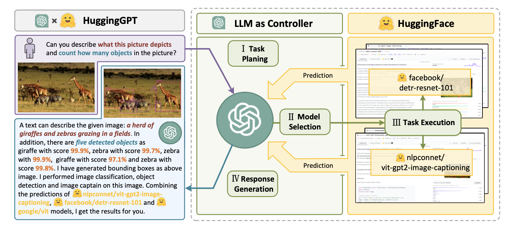
该系统包括四个阶段：
（1）任务规划：LLM作为大脑，将用户请求解析为多个任务。每个任务包含四个属性：任务类型、ID、依赖关系和参数。他们使用少样本示例引导LLM进行任务解析和规划。
指令：
AI助手可以将用户输入解析为若干任务：[{"task": task, "id": task_id, "dep": dependency_task_ids, "args": {"text": text, "image": URL, "audio": URL, "video": URL}}]。“dep”字段表示生成当前任务所需新资源的前一个任务的ID。特殊标记“
-task_id”指代依赖任务ID为task_id生成的文本、图像、音频或视频。任务必须从以下选项中选择：{{ Available Task List }}。任务之间存在逻辑关系，请注意它们的顺序。如果用户输入无法解析，则需回复空JSON。以下是几个参考案例：{{ Demonstrations }}。聊天历史记录为{{ Chat History }}，你可以从中找到用户提到的资源路径以辅助任务规划。
（2）模型选择：LLM将任务分配给专家模型，此时请求被构造为多选题。LLM会看到一个可供选择的模型列表。由于上下文长度有限，需要基于任务类型进行过滤。
指令：
给定用户请求和调用命令，AI助手帮助用户从模型列表中选择合适的模型。AI助手仅输出最合适模型的ID。输出必须是严格的JSON格式：{"id": "id", "reason": "your detail reason for the choice"}。我们提供了一个模型列表供你选择{{ Candidate Models }}。请从列表中选择一个模型。
（3）任务执行：专家模型在特定任务上执行并记录结果。
指令：
根据输入和推理结果，AI助手需要描述过程和结果。前面的阶段可以组织为 - 用户输入：{{ User Input }}，任务规划：{{ Tasks }}，模型选择：{{ Model Assignment }}，任务执行：{{ Predictions }}。你必须先直接回答用户的请求。然后以第一人称描述任务过程，并向用户展示你的分析和模型推理结果。如果推理结果包含文件路径，必须告诉用户完整的文件路径。
（4）响应生成：LLM接收执行结果，并向用户提供总结后的结果。
要将HuggingGPT投入实际使用，需要解决几个挑战：（1）提升效率，因为LLM的多次推理轮次以及与其他模型的交互会降低整体速度；（2）依赖较长的上下文窗口来沟通复杂的任务内容；（3）提升LLM输出和外部模型服务的稳定性。
API-Bank（Li et al. 2023）是一个用于评估工具增强型LLM性能的基准测试。它包含53个常用API工具、一个完整的工具增强LLM工作流程，以及264个涉及568次API调用的带标注对话。所选API种类非常多样，包括搜索引擎、计算器、日历查询、智能家居控制、日程管理、健康数据管理、账户认证流程等。由于API数量众多，LLM首先需要访问API搜索引擎来找到正确的API，然后根据相应文档进行调用。
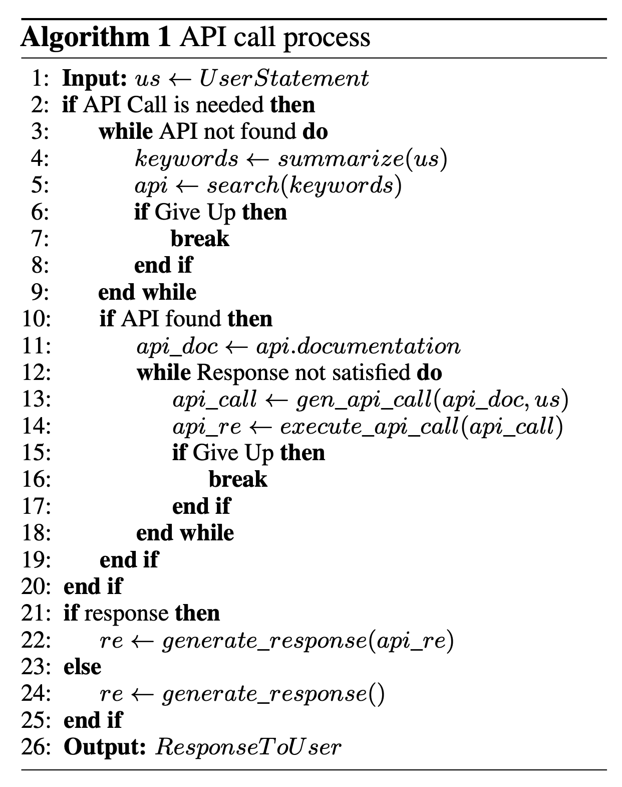
在API-Bank工作流中，LLM需要在每个步骤做出若干决策，我们可以评估每个决策的准确性。这些决策包括：
该基准测试在三个层面评估智能体的工具使用能力：
案例研究
科学发现智能体
ChemCrow（Bran et al. 2023）是一个特定领域的示例，LLM被13个专家设计的工具增强，用于完成有机合成、药物发现和材料设计等任务。该工作流使用LangChain实现，体现了之前在ReAct和MRKL中描述的内容，并将CoT推理与任务相关工具相结合：
一个有趣的观察是，虽然基于LLM的评估认为GPT-4和ChemCrow的表现几乎相当，但由领域专家进行的人类评估（侧重于方案的完整性和化学正确性）显示ChemCrow大幅优于GPT-4。这表明在需要深度专业知识的领域，使用LLM评估自身性能可能存在问题。专业知识的缺失可能导致LLM无法认识到自己的缺陷，从而无法很好地判断任务结果的正确性。
Boiko et al. (2023)同样研究了赋能科学发现的LLM智能体，用于自主设计、规划和执行复杂的科学实验。该智能体可以使用工具浏览互联网、阅读文档、执行代码、调用机器人实验API，并利用其他LLM。
例如，当被要求“开发一种新型抗癌药物”时，模型给出了以下推理步骤：
他们还讨论了相关风险，尤其是涉及非法药物和生物武器的情况。他们构建了一个包含已知化学武器制剂列表的测试集，并要求智能体合成它们。11个请求中有4个（36%）被接受并获得了合成方案，智能体还尝试查阅文档来执行该过程。11个请求中有7个被拒绝，在这7个被拒绝的案例中，5个发生在网页搜索之后，2个仅基于提示就被拒绝。
生成式智能体模拟
Generative Agents（Park, et al. 2023）是一个非常有趣的实验，25个由LLM驱动的智能体控制的虚拟角色生活并在一个受《模拟人生》启发的沙盒环境中互动。生成式智能体为交互式应用创造了可信的人类行为模拟。
生成式智能体的设计将LLM与记忆、规划和反思机制相结合，使智能体能够基于过去经验行事，并与其他智能体进行交互。
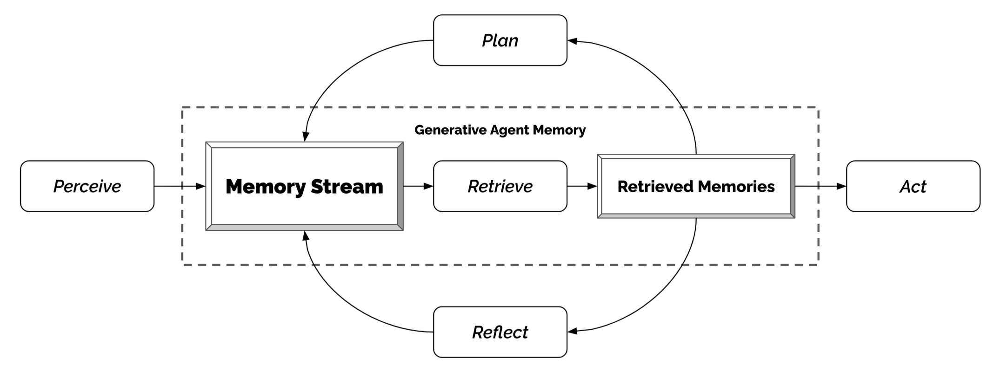
这个有趣的模拟产生了涌现的社会行为，例如信息扩散、关系记忆（例如两个智能体继续之前的话题）和社交活动协调（例如举办派对并邀请许多其他人）。
概念验证示例
AutoGPT吸引了大量关注，它展示了以LLM作为主要控制器的自主智能体的可能性。由于使用自然语言接口，它存在不少可靠性问题，但仍然是一个很酷的概念验证演示。AutoGPT中的大量代码都与格式解析有关。
以下是AutoGPT使用的系统消息，其中{{...}}为用户输入：
You are {{ai-name}}, {{user-provided AI bot description}}.
Your decisions must always be made independently without seeking user assistance. Play to your strengths as an LLM and pursue simple strategies with no legal complications.
GOALS:
1. {{user-provided goal 1}}
2. {{user-provided goal 2}}
3. ...
4. ...
5. ...
Constraints:
1. ~4000 word limit for short term memory. Your short term memory is short, so immediately save important information to files.
2. If you are unsure how you previously did something or want to recall past events, thinking about similar events will help you remember.
3. No user assistance
4. Exclusively use the commands listed in double quotes e.g. "command name"
5. Use subprocesses for commands that will not terminate within a few minutes
Commands:
1. Google Search: "google", args: "input": "<search>"
2. Browse Website: "browse_website", args: "url": "<url>", "question": "<what_you_want_to_find_on_website>"
3. Start GPT Agent: "start_agent", args: "name": "<name>", "task": "<short_task_desc>", "prompt": "<prompt>"
4. Message GPT Agent: "message_agent", args: "key": "<key>", "message": "<message>"
5. List GPT Agents: "list_agents", args:
6. Delete GPT Agent: "delete_agent", args: "key": "<key>"
7. Clone Repository: "clone_repository", args: "repository_url": "<url>", "clone_path": "<directory>"
8. Write to file: "write_to_file", args: "file": "<file>", "text": "<text>"
9. Read file: "read_file", args: "file": "<file>"
10. Append to file: "append_to_file", args: "file": "<file>", "text": "<text>"
11. Delete file: "delete_file", args: "file": "<file>"
12. Search Files: "search_files", args: "directory": "<directory>"
13. Analyze Code: "analyze_code", args: "code": "<full_code_string>"
14. Get Improved Code: "improve_code", args: "suggestions": "<list_of_suggestions>", "code": "<full_code_string>"
15. Write Tests: "write_tests", args: "code": "<full_code_string>", "focus": "<list_of_focus_areas>"
16. Execute Python File: "execute_python_file", args: "file": "<file>"
17. Generate Image: "generate_image", args: "prompt": "<prompt>"
18. Send Tweet: "send_tweet", args: "text": "<text>"
19. Do Nothing: "do_nothing", args:
20. Task Complete (Shutdown): "task_complete", args: "reason": "<reason>"
Resources:
1. Internet access for searches and information gathering.
2. Long Term memory management.
3. GPT-3.5 powered Agents for delegation of simple tasks.
4. File output.
Performance Evaluation:
1. Continuously review and analyze your actions to ensure you are performing to the best of your abilities.
2. Constructively self-criticize your big-picture behavior constantly.
3. Reflect on past decisions and strategies to refine your approach.
4. Every command has a cost, so be smart and efficient. Aim to complete tasks in the least number of steps.
You should only respond in JSON format as described below
Response Format:
{
"thoughts": {
"text": "thought",
"reasoning": "reasoning",
"plan": "- short bulleted\n- list that conveys\n- long-term plan",
"criticism": "constructive self-criticism",
"speak": "thoughts summary to say to user"
},
"command": {
"name": "command name",
"args": {
"arg name": "value"
}
}
}
Ensure the response can be parsed by Python json.loads
GPT-Engineer是另一个项目，它能根据自然语言指定的任务创建一个完整的代码仓库。GPT-Engineer被指示思考需要构建的一系列较小组件，并在必要时向用户提问以澄清问题。
以下是GPT-Engineer发送给OpenAI ChatCompletion端点的任务澄清对话样本。用户输入被包裹在{{user input text}}中。
[
{
"role": "system",
"content": "You will read instructions and not carry them out, only seek to clarify them.\nSpecifically you will first summarise a list of super short bullets of areas that need clarification.\nThen you will pick one clarifying question, and wait for an answer from the user.\n"
},
{
"role": "user",
"content": "We are writing {{a Super Mario game in python. MVC components split in separate files. Keyboard control.}}\n"
},
{
"role": "assistant",
"content": "Summary of areas that need clarification:\n1. Specifics of the Super Mario game (e.g. level design, characters, gameplay mechanics)\n2. Details about the MVC components (e.g. which components are in each file)\n3. Keyboard control implementation (e.g. which keys to use, how to handle input)\n\nClarifying question:\nCan you provide more details about the Super Mario game, such as level design, characters, and gameplay mechanics?"
},
{
"role": "user",
"content": "{{There are 10 levels in total. The main character is a plumber named Mario, who can walk and jump. It is a classical platform game just like Super Mario. The main character moves from left to right, trying to get to the destination, where there are many obstacles and attacks from enemies in the process.}}\n\nIs anything else unclear? If yes, only answer in the form:\n{remaining unclear areas} remaining questions.\n{Next question}\nIf everything is sufficiently clear, only answer \"Nothing more to clarify.\"."
},
{
"role": "assistant",
"content": "Remaining unclear areas: 2 remaining questions.\nCan you provide more information about how the MVC components are split into separate files?"
},
{
"role": "user",
"content": "{{Make your own assumptions and state them explicitly before starting}}"
}
]
在完成这些澄清后，智能体切换到代码编写模式，并使用不同的系统消息。 系统消息：
你将获得编写代码的指令。 你将写一个非常长的回答。确保架构的每一个细节最终都被实现为代码。 确保架构的每一个细节最终都被实现为代码。
一步一步思考，通过自我推理做出正确的决策，以确保我们得到正确的结果。 你首先要列出必要的核心类、函数、方法的名称，并简要说明它们的目的。
然后你将输出每个文件的内容，包括所有代码。 每个文件必须严格遵循Markdown代码块格式，其中以下标记必须被替换为： FILENAME是包含文件扩展名的小写文件名， LANG是代码所用语言的代码块标记语言， CODE是代码内容：
FILENAME
CODE
你将从“entrypoint”文件开始，然后是它所导入的文件，依次类推。 请注意，代码必须是完全可运行的。不要使用占位符。
遵循适合所用语言和框架的最佳实践文件命名规范。 确保每个文件都包含所有import、类型等。确保不同文件中的代码相互兼容。 确保实现所有代码，如果不确定，就写一个合理的实现。 包含模块依赖或包管理器依赖定义文件。 在完成之前，再次检查架构的所有部分是否都已在文件中实现。
有用的信息： 你几乎总是把不同的类放在不同的文件中。 对于Python，你总是创建一个合适的requirements.txt文件。 对于NodeJS，你总是创建一个合适的package.json文件。 你总是在函数定义处添加简短注释说明其用途。 你会尝试为非常复杂的逻辑部分添加解释性注释。 你始终遵循所请求语言的最佳实践来描述所编写的代码，作为一个定义好的 包/项目。
Python工具偏好：
对话样本：
[
{
"role": "system",
"content": "You will get instructions for code to write.\nYou will write a very long answer. Make sure that every detail of the architecture is, in the end, implemented as code.\nMake sure that every detail of the architecture is, in the end, implemented as code.\n\nThink step by step and reason yourself to the right decisions to make sure we get it right.\nYou will first lay out the names of the core classes, functions, methods that will be necessary, as well as a quick comment on their purpose.\n\nThen you will output the content of each file including ALL code.\nEach file must strictly follow a markdown code block format, where the following tokens must be replaced such that\nFILENAME is the lowercase file name including the file extension,\nLANG is the markup code block language for the code's language, and CODE is the code:\n\nFILENAME\n```LANG\nCODE\n```\n\nYou will start with the \"entrypoint\" file, then go to the ones that are imported by that file, and so on.\nPlease note that the code should be fully functional. No placeholders.\n\nFollow a language and framework appropriate best practice file naming convention.\nMake sure that files contain all imports, types etc. Make sure that code in different files are compatible with each other.\nEnsure to implement all code, if you are unsure, write a plausible implementation.\nInclude module dependency or package manager dependency definition file.\nBefore you finish, double check that all parts of the architecture is present in the files.\n\nUseful to know:\nYou almost always put different classes in different files.\nFor Python, you always create an appropriate requirements.txt file.\nFor NodeJS, you always create an appropriate package.json file.\nYou always add a comment briefly describing the purpose of the function definition.\nYou try to add comments explaining very complex bits of logic.\nYou always follow the best practices for the requested languages in terms of describing the code written as a defined\npackage/project.\n\n\nPython toolbelt preferences:\n- pytest\n- dataclasses\n"
},
# … same conversation as earlier, ended with "Make your own assumptions and state them explicitly before starting".
{
"role": "assistant",
"content": "Assumptions:\n1. Model: The model will contain the game's data, such as level information, character states, and enemy positions.\n2. View: The view will handle the game's visuals, including rendering the game objects, backgrounds, and updating the display.\n3. Controller: The controller will manage user input, such as keyboard controls, and update the model accordingly.\n\nWith these assumptions in mind, is there any specific aspect of the keyboard control implementation you would like me to clarify?"
},
{
"role": "user",
"content": "Please now remember the steps:\n\nThink step by step and reason yourself to the right decisions to make sure we get it right.\nFirst lay out the names of the core classes, functions, methods that will be necessary, As well as a quick comment on their purpose.\n\nThen you will output the content of each file including ALL code.\nEach file must strictly follow a markdown code block format, where the following tokens must be replaced such that\nFILENAME is the lowercase file name including the file extension,\nLANG is the markup code block language for the code's language, and CODE is the code:\n\nFILENAME\n```LANG\nCODE\n```\n\nPlease note that the code should be fully functional. No placeholders.\n\nYou will start with the \"entrypoint\" file, then go to the ones that are imported by that file, and so on.\nFollow a language and framework appropriate best practice file naming convention.\nMake sure that files contain all imports, types etc. The code should be fully functional. Make sure that code in different files are compatible with each other.\nBefore you finish, double check that all parts of the architecture is present in the files.\n"
}
]
挑战
在了解了构建以LLM为中心的智能体的关键思想和演示之后，我开始看到几个常见的限制：
引用
引用格式：
Weng, Lilian. (Jun 2023). “LLM-powered Autonomous Agents”. Lil’Log. https://lilianweng.github.io/posts/2023-06-23-agent/.
@article{weng2023agent,
title = "LLM-powered Autonomous Agents",
author = "Weng, Lilian",
journal = "lilianweng.github.io",
year = "2023",
month = "Jun",
url = "https://lilianweng.github.io/posts/2023-06-23-agent/"
}
参考文献
[1] Wei et al. “Chain of thought prompting elicits reasoning in large language models.” NeurIPS 2022
[2] Yao et al. “Tree of Thoughts: Deliberate Problem Solving with Large Language Models.” arXiv preprint arXiv:2305.10601 (2023).
[3] Liu et al. “Chain of Hindsight Aligns Language Models with Feedback “ arXiv preprint arXiv:2302.02676 (2023).
[4] Liu et al. “LLM+P: Empowering Large Language Models with Optimal Planning Proficiency” arXiv preprint arXiv:2304.11477 (2023).
[5] Yao et al. “ReAct: Synergizing reasoning and acting in language models.” ICLR 2023.
[6] Google Blog. “Announcing ScaNN: Efficient Vector Similarity Search” July 28, 2020.
[7] https://chat.openai.com/share/46ff149e-a4c7-4dd7-a800-fc4a642ea389
[8] Shinn & Labash. “Reflexion: an autonomous agent with dynamic memory and self-reflection” arXiv preprint arXiv:2303.11366 (2023).
[9] Laskin et al. “In-context Reinforcement Learning with Algorithm Distillation” ICLR 2023.
[10] Karpas et al. “MRKL Systems A modular, neuro-symbolic architecture that combines large language models, external knowledge sources and discrete reasoning.” arXiv preprint arXiv:2205.00445 (2022).
[11] Nakano et al. “Webgpt: Browser-assisted question-answering with human feedback.” arXiv preprint arXiv:2112.09332 (2021).
[12] Parisi et al. “TALM: Tool Augmented Language Models”
[13] Schick et al. “Toolformer: Language Models Can Teach Themselves to Use Tools.” arXiv preprint arXiv:2302.04761 (2023).
[14] Weaviate Blog. Why is Vector Search so fast? Sep 13, 2022.
[15] Li et al. “API-Bank: A Benchmark for Tool-Augmented LLMs” arXiv preprint arXiv:2304.08244 (2023).
[16] Shen et al. “HuggingGPT: Solving AI Tasks with ChatGPT and its Friends in HuggingFace” arXiv preprint arXiv:2303.17580 (2023).
[17] Bran et al. “ChemCrow: Augmenting large-language models with chemistry tools.” arXiv preprint arXiv:2304.05376 (2023).
[18] Boiko et al. “Emergent autonomous scientific research capabilities of large language models.” arXiv preprint arXiv:2304.05332 (2023).
[19] Joon Sung Park, et al. “Generative Agents: Interactive Simulacra of Human Behavior.” arXiv preprint arXiv:2304.03442 (2023).
[20] AutoGPT. https://github.com/Significant-Gravitas/Auto-GPT
[21] GPT-Engineer. https://github.com/AntonOsika/gpt-engineer